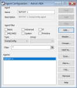
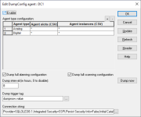

You can set up the DumpConfig agent to specify the configuration of specific agents that you want to save to the OLE DB database, including the interval and triggers.


Important: The optional comma-delimited list of Agent slots or Agent instances for the specified Agent type cannot exceed 79 characters!
Note:
|
Click the ... browse button to the right of this field and use the Data Link Properties dialog to create the required connection string to your SQL Server database.

Configurations will be saved to tables named Adr_Dump_AgentTypeName in the specified database, for example: Adr_Dump_Analog.
The status bits of this agent can be used for diagnosing the status of its connection to the database and/or the process of saving agent configurations to this database.
 Provider TAB
Provider TAB